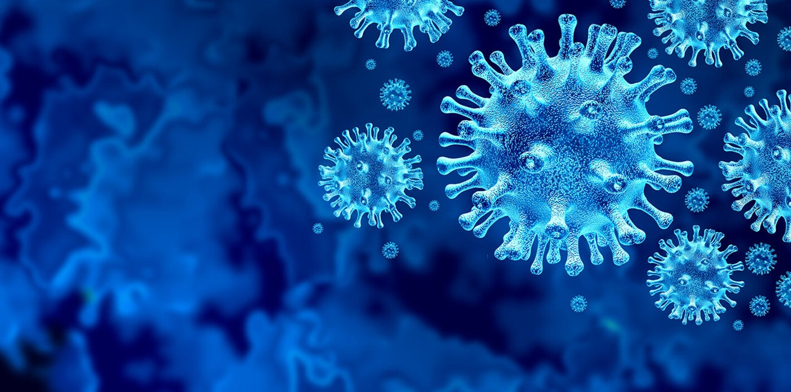

COVID-19 en pleno 2022.
La pandemia de coronavirus sigue avanzando en el mundo. Afortunadamente, también lo hacen los estudios y la evidencia científica sobre el virus (SARS-CoV-2) y la enfermedad (COVID-19).
En este espacio, que vamos actualizando periódicamente, hacemos un resumen de la información más relevante que va emergiendo.
clickea aqui para recibir actualizaciones de vacunaciónMX por email.
Buscando virus de alto riesgo
-
Se aislaron virus muy similares al SARS-CoV-2 en murciélagos del norte de Laos. Estos virus se unen muy bien al receptor humano ACE2 y pueden replicarse eficazmente en células humanas. Otro estudio identificó más
de 100 virus (algunos de ellos nuevos) en animales salvajes que se venden con frecuencia en los mercados chinos, incluidos 21 virus considerados de "alto riesgo" para el ser humano.
Una pandemia de salud mental
-
Un estudio de una gran cohorte de veteranos en EE.UU. encuentra que al 4,4% - 5,6% de los que sobrevivieron a la COVID-19 se le diagnosticó algún trastorno neuropsiquiátrico. Esto significa que el virus puede haber
contribuido a 2,8 millones de nuevos casos de trastornos de salud mental en EE.UU. y a más de 14,8 millones en todo el mundo.
Covid prolongada y vacunación
-
Las personas vacunadas tienen menos probabilidades de desarrollar Covid prolongada a corto, medio y largo plazo, según una revisión de la evidencia disponible. Los estudios también sugieren que la vacunación puede
mejorar los síntomas de Covid prolongada en la mayoría de los casos, especialmente si la vacunación ocurrió poco después del diagnóstico. Sin embargo, en algunos casos se observó un empeoramiento.
La inmunidad "natural" necesita un refuerzo
-
Dos estudios con pacientes convalecientes (uno en el Reino Unido y otro en Israel, durante la ola de delta) muestran que la inmunidad adquirida por la infección y reforzada con la vacunación ofrece una protección
robusta y duradera (> 1 año) contra la reinfección. En el estudio israelí, la reinfección se produjo en el 0,4% de los participantes infectados y vacunados, frente al 3,3% de los infectados pero no vacunados.
Las dosis adicionales en personas con infección previa no supusieron ninguna diferencia.
El estudio (no revisado por pares) encuentra que las personas no vacunadas infectadas por ómicron tienen bajos
niveles de anticuerpos neutralizantes con reactividad cruzada, lo que sugiere que siguen siendo susceptibles a la infección por variantes anteriores. En cambio, la vacunación previa a la infección por ómicron
mejora considerablemente la neutralización de otras variantes y la protección contra ellas.
La “hermana” de ómicron
-
La subvariante BA.2 ómicron parece ser ligeramente más transmisible que la subvariante BA.1 prevalente, según datos del Reino Unido y Dinamarca, pero no hay indicios de que cause una enfermedad más grave; y la eficacia
de la vacuna contra la BA.2 no ha cambiado, según el último informe del Reino Unido. Ambas cepas son tan distintas genéticamente como lo son las anteriores variantes alfa, beta y gamma entre sí. Por lo tanto,
aún no está claro si las infecciones por BA.1 proporcionarán protección contra BA.2 y en qué medida.
Mantente al día de las novedades científicas sobre COVID-19 y otros temas clave de salud global.
Copyright © 2022 vacunaciónMX by Luis Antonio Linares
[Evidencia publicada entre el 12/01/2022 y el 25/01/2022]
Los viajes de ómicron
Según datos de vigilancia de aguas residuales en los Estados Unidos, ómicron probablemente estaba presente en la ciudad de Nueva York desde el 21 de noviembre, cuatro días antes de que Sudáfrica anunciara por primera vez casos
de esta variante.

BACK